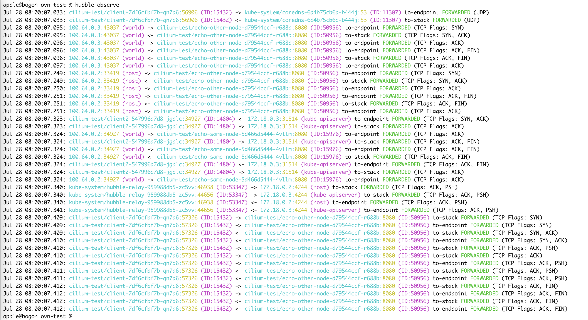
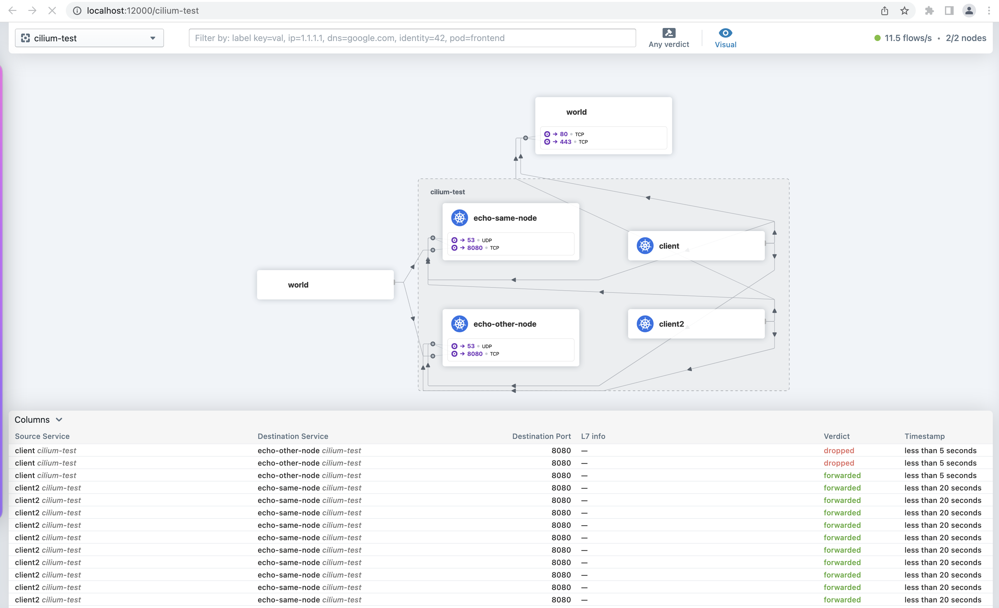

Cilium 网络流量观测¶
Kube-OVN 当前已经支持与 Cilium 集成，具体操作可以参考 Cilium 集成。
Cilium 提供了丰富的网络流量观测能力，流量可观测性是由 Hubble 提供的。Hubble 可以观察节点、集群甚至多集群场景下跨集群的流量。
安装 Hubble¶
默认的 Cilium 集成安装中，并没有安装 Hubble 相关组件，因此要支持流量观测，需要先在环境上补充安装 Hubble。
执行以下命令，使用 helm 安装 Hubble：
helm upgrade cilium cilium/cilium --version 1.11.6 \
--namespace kube-system \
--reuse-values \
--set hubble.relay.enabled=true \
--set hubble.ui.enabled=true
补充安装 Hubble 之后，执行 cilium status 查看组件状态，确认 Hubble 安装成功。
# cilium status
/¯¯\
/¯¯\__/¯¯\ Cilium: OK
\__/¯¯\__/ Operator: OK
/¯¯\__/¯¯\ Hubble: OK
\__/¯¯\__/ ClusterMesh: disabled
\__/
Deployment hubble-relay Desired: 1, Ready: 1/1, Available: 1/1
Deployment cilium-operator Desired: 2, Ready: 2/2, Available: 2/2
DaemonSet cilium Desired: 2, Ready: 2/2, Available: 2/2
Deployment hubble-ui Desired: 1, Ready: 1/1, Available: 1/1
Containers: cilium Running: 2
hubble-ui Running: 1
hubble-relay Running: 1
cilium-operator Running: 2
Cluster Pods: 16/17 managed by Cilium
Image versions hubble-relay quay.io/cilium/hubble-relay:v1.11.6@sha256:fd9034a2d04d5b973f1e8ed44f230ea195b89c37955ff32e34e5aa68f3ed675a: 1
cilium-operator quay.io/cilium/operator-generic:v1.11.6@sha256:9f6063c7bcaede801a39315ec7c166309f6a6783e98665f6693939cf1701bc17: 2
cilium quay.io/cilium/cilium:v1.11.6@sha256:f7f93c26739b6641a3fa3d76b1e1605b15989f25d06625260099e01c8243f54c: 2
hubble-ui quay.io/cilium/hubble-ui:v0.9.0@sha256:0ef04e9a29212925da6bdfd0ba5b581765e41a01f1cc30563cef9b30b457fea0: 1
hubble-ui quay.io/cilium/hubble-ui-backend:v0.9.0@sha256:000df6b76719f607a9edefb9af94dfd1811a6f1b6a8a9c537cba90bf12df474b: 1
apple@bogon cilium %
安装 Hubble 组件之后，需要安装命令行，用于在环境上查看流量信息。 执行以下命令，安装 Hubble CLI :
curl -L --fail --remote-name-all https://github.com/cilium/hubble/releases/download/v0.10.0/hubble-linux-amd64.tar.gz
sudo tar xzvfC hubble-linux-amd64.tar.gz /usr/local/bin
部署测试业务¶
Cilium 官方提供了一个流量测试的部署方案，可以直接使用官方部署的业务进行测试。
执行命令 cilium connectivity test，Cilium 会自动创建 cilium-test 的 Namespace，同时在 cilium-test 下部署测试业务。
正常部署完后，可以查看 cilium-test namespace 下的资源信息，参考如下：
# kubectl get all -n cilium-test
NAME READY STATUS RESTARTS AGE
pod/client-7df6cfbf7b-z5t2j 1/1 Running 0 21s
pod/client2-547996d7d8-nvgxg 1/1 Running 0 21s
pod/echo-other-node-d79544ccf-hl4gg 2/2 Running 0 21s
pod/echo-same-node-5d466d5444-ml7tc 2/2 Running 0 21s
NAME TYPE CLUSTER-IP EXTERNAL-IP PORT(S) AGE
service/echo-other-node NodePort 10.109.58.126 <none> 8080:32269/TCP 21s
service/echo-same-node NodePort 10.108.70.32 <none> 8080:32490/TCP 21s
NAME READY UP-TO-DATE AVAILABLE AGE
deployment.apps/client 1/1 1 1 21s
deployment.apps/client2 1/1 1 1 21s
deployment.apps/echo-other-node 1/1 1 1 21s
deployment.apps/echo-same-node 1/1 1 1 21s
NAME DESIRED CURRENT READY AGE
replicaset.apps/client-7df6cfbf7b 1 1 1 21s
replicaset.apps/client2-547996d7d8 1 1 1 21s
replicaset.apps/echo-other-node-d79544ccf 1 1 1 21s
replicaset.apps/echo-same-node-5d466d5444 1 1 1 21s
使用命令行进行流量观测¶
默认情况下，网络流量观测仅提供每个节点 Cilium 代理观察到的流量。 可以在 kube-system namespace 下的 Cilium 代理 pod 中执行 hubble observe 命令，查看该节点上的流量信息。
# kubectl get pod -n kube-system -o wide
NAME READY STATUS RESTARTS AGE IP NODE NOMINATED NODE READINESS GATES
cilium-d6h56 1/1 Running 0 2d20h 172.18.0.2 kube-ovn-worker <none> <none>
cilium-operator-5887f78bbb-c7sb2 1/1 Running 0 2d20h 172.18.0.2 kube-ovn-worker <none> <none>
cilium-operator-5887f78bbb-wj8gt 1/1 Running 0 2d20h 172.18.0.3 kube-ovn-control-plane <none> <none>
cilium-tq5xb 1/1 Running 0 2d20h 172.18.0.3 kube-ovn-control-plane <none> <none>
kube-ovn-pinger-7lgk8 1/1 Running 0 21h 10.16.0.19 kube-ovn-control-plane <none> <none>
kube-ovn-pinger-msvcn 1/1 Running 0 21h 10.16.0.18 kube-ovn-worker <none> <none>
# kubectl exec -it -n kube-system cilium-d6h56 -- bash
root@kube-ovn-worker:/home/cilium# hubble observe --from-namespace kube-system
Jul 29 03:24:25.551: kube-system/kube-ovn-pinger-msvcn:35576 -> 172.18.0.3:6642 to-stack FORWARDED (TCP Flags: ACK, PSH)
Jul 29 03:24:25.561: kube-system/kube-ovn-pinger-msvcn:35576 -> 172.18.0.3:6642 to-stack FORWARDED (TCP Flags: RST)
Jul 29 03:24:25.561: kube-system/kube-ovn-pinger-msvcn:35576 -> 172.18.0.3:6642 to-stack FORWARDED (TCP Flags: ACK, RST)
Jul 29 03:24:25.572: kube-system/kube-ovn-pinger-msvcn:35578 -> 172.18.0.3:6642 to-stack FORWARDED (TCP Flags: SYN)
Jul 29 03:24:25.572: kube-system/kube-ovn-pinger-msvcn:35578 -> 172.18.0.3:6642 to-stack FORWARDED (TCP Flags: ACK)
Jul 29 03:24:25.651: kube-system/kube-ovn-pinger-msvcn:35578 -> 172.18.0.3:6642 to-stack FORWARDED (TCP Flags: ACK, PSH)
Jul 29 03:24:25.661: kube-system/kube-ovn-pinger-msvcn:35578 -> 172.18.0.3:6642 to-stack FORWARDED (TCP Flags: RST)
Jul 29 03:24:25.661: kube-system/kube-ovn-pinger-msvcn:35578 -> 172.18.0.3:6642 to-stack FORWARDED (TCP Flags: ACK, RST)
Jul 29 03:24:25.761: kube-system/kube-ovn-pinger-msvcn:52004 -> 172.18.0.3:6443 to-stack FORWARDED (TCP Flags: ACK, PSH)
Jul 29 03:24:25.779: kube-system/kube-ovn-pinger-msvcn -> kube-system/kube-ovn-pinger-7lgk8 to-stack FORWARDED (ICMPv4 EchoRequest)
Jul 29 03:24:25.779: kube-system/kube-ovn-pinger-msvcn <- kube-system/kube-ovn-pinger-7lgk8 to-endpoint FORWARDED (ICMPv4 EchoReply)
Jul 29 03:24:25.866: kube-system/hubble-ui-7596f7ff6f-7j6f2:55836 <- kube-system/hubble-relay-959988db5-zc5vv:4245 to-stack FORWARDED (TCP Flags: ACK)
Jul 29 03:24:25.866: kube-system/hubble-ui-7596f7ff6f-7j6f2:55836 <- kube-system/hubble-relay-959988db5-zc5vv:80 to-endpoint FORWARDED (TCP Flags: ACK)
Jul 29 03:24:25.866: kube-system/hubble-ui-7596f7ff6f-7j6f2:55836 -> kube-system/hubble-relay-959988db5-zc5vv:4245 to-stack FORWARDED (TCP Flags: ACK)
Jul 29 03:24:25.866: kube-system/hubble-ui-7596f7ff6f-7j6f2:55836 -> kube-system/hubble-relay-959988db5-zc5vv:4245 to-endpoint FORWARDED (TCP Flags: ACK)
Jul 29 03:24:25.975: kube-system/kube-ovn-pinger-7lgk8 -> kube-system/kube-ovn-pinger-msvcn to-endpoint FORWARDED (ICMPv4 EchoRequest)
Jul 29 03:24:25.975: kube-system/kube-ovn-pinger-7lgk8 <- kube-system/kube-ovn-pinger-msvcn to-stack FORWARDED (ICMPv4 EchoReply)
Jul 29 03:24:25.979: kube-system/kube-ovn-pinger-msvcn -> 172.18.0.3 to-stack FORWARDED (ICMPv4 EchoRequest)
Jul 29 03:24:26.037: kube-system/coredns-6d4b75cb6d-lbgjg:36430 -> 172.18.0.3:6443 to-stack FORWARDED (TCP Flags: ACK)
Jul 29 03:24:26.282: kube-system/kube-ovn-pinger-msvcn -> 172.18.0.2 to-stack FORWARDED (ICMPv4 EchoRequest)
部署 Hubble Relay 后，Hubble 可以提供完整的集群范围的网络流量观测。
配置端口转发¶
为了能正常访问 Hubble API，需要创建端口转发，将本地请求转发到 Hubble Service。可以执行 kubectl port-forward deployment/hubble-relay -n kube-system 4245:4245 命令，在当前终端开启端口转发。
端口转发配置可以参考 端口转发。
kubectl port-forward 命令不会返回，需要打开另一个终端来继续测试。
配置完端口转发之后，在终端执行 hubble status 命令，如果有类似如下输出，则端口转发配置正确，可以使用命令行进行流量观测。
# hubble status
Healthcheck (via localhost:4245): Ok
Current/Max Flows: 8,190/8,190 (100.00%)
Flows/s: 22.86
Connected Nodes: 2/2
命令行观测¶
在终端上执行 hubble observe 命令，查看集群的流量信息。 观测到的 cilium-test 相关的测试流量参考如下：

需要注意的是， hubble observe 命令的显示结果，是当前命令行执行时查询到的流量信息。多次执行命令行，可以查看到不同的流量信息。 更多详细的观测信息，可以执行 hubble help observe 命令查看 Hubble CLI 的详细使用方式。
使用 UI 进行流量观测¶
执行 cilium status 命令，确认 Hubble UI 已经安装成功。在第二步的 Hubble 安装中，已经补充了 UI 的安装。
执行命令 cilium hubble ui 可以自动创建端口转发，将 hubble-ui service 映射到本地端口。 正常情况下，执行完命令后，会自动打开本地的浏览器，跳转到 Hubble UI 界面。如果没有自动跳转，在浏览器中输入 http://localhost:12000 打开 UI 观察界面。
在界面左上角，选择 cilium-test namespace，查看 Cilium 提供的测试流量信息。

Hubble 流量监控¶
Hubble 组件提供了集群中 Pod 网络行为的监控，为了支持查看 Hubble 提供的监控数据，需要使能监控统计。
参考以下命令，补充 hubble.metrics.enabled 配置项:
helm upgrade cilium cilium/cilium --version 1.11.6 \
--namespace kube-system \
--reuse-values \
--set hubble.relay.enabled=true \
--set hubble.ui.enabled=true \
--set hubble.metrics.enabled="{dns,drop,tcp,flow,icmp,http}"
部署之后，会在 kube-system namespace 生成名称为 hubble-metrics 的服务。通过访问 Endpoints 查询 Hubble 提供的监控指标，参考如下:
# curl 172.18.0.2:9091/metrics
# HELP hubble_drop_total Number of drops
# TYPE hubble_drop_total counter
hubble_drop_total{protocol="ICMPv6",reason="Unsupported L3 protocol"} 2
# HELP hubble_flows_processed_total Total number of flows processed
# TYPE hubble_flows_processed_total counter
hubble_flows_processed_total{protocol="ICMPv4",subtype="to-endpoint",type="Trace",verdict="FORWARDED"} 335
hubble_flows_processed_total{protocol="ICMPv4",subtype="to-stack",type="Trace",verdict="FORWARDED"} 335
hubble_flows_processed_total{protocol="ICMPv6",subtype="",type="Drop",verdict="DROPPED"} 2
hubble_flows_processed_total{protocol="TCP",subtype="to-endpoint",type="Trace",verdict="FORWARDED"} 8282
hubble_flows_processed_total{protocol="TCP",subtype="to-stack",type="Trace",verdict="FORWARDED"} 6767
hubble_flows_processed_total{protocol="UDP",subtype="to-endpoint",type="Trace",verdict="FORWARDED"} 1642
hubble_flows_processed_total{protocol="UDP",subtype="to-stack",type="Trace",verdict="FORWARDED"} 1642
# HELP hubble_icmp_total Number of ICMP messages
# TYPE hubble_icmp_total counter
hubble_icmp_total{family="IPv4",type="EchoReply"} 335
hubble_icmp_total{family="IPv4",type="EchoRequest"} 335
hubble_icmp_total{family="IPv4",type="RouterSolicitation"} 2
# HELP hubble_tcp_flags_total TCP flag occurrences
# TYPE hubble_tcp_flags_total counter
hubble_tcp_flags_total{family="IPv4",flag="FIN"} 2043
hubble_tcp_flags_total{family="IPv4",flag="RST"} 301
hubble_tcp_flags_total{family="IPv4",flag="SYN"} 1169
hubble_tcp_flags_total{family="IPv4",flag="SYN-ACK"} 1169